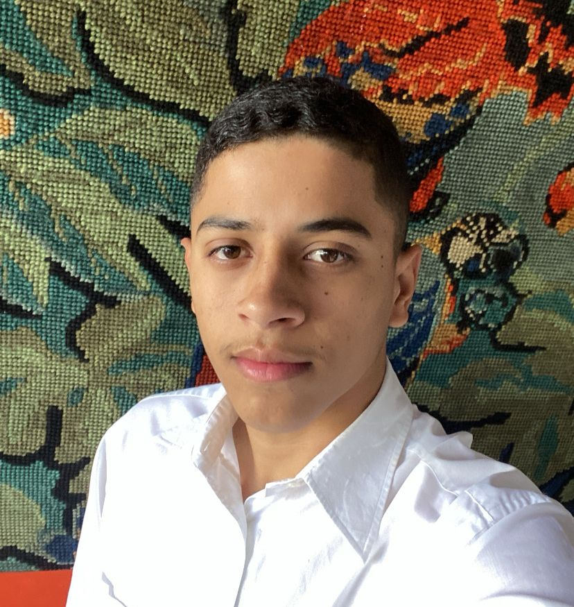

Olá! Me chamo
Luiz Fernando Desenvolvedor
Desenvolvedor web full-stack com desenvolvimento de aplicações web escaláveis e responsivas. paixonado por desenvolvimento de software, com experiência em HTML, CSS, JavaScript, React. Habilidade em criar interfaces intuitivas e funcionais. Proativo, com espírito de equipe e sempre em busca de novos desafios e aprendizados.
Saiba Mais!
